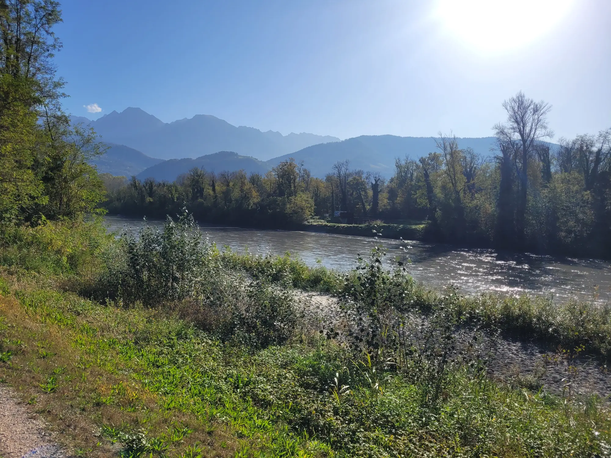

Balades guidées
Grenoble et ses montagnes, à vélo
Six balades, de la vieille ville aux balcons de Chartreuse. Choisissez-en une pour la voir sur la carte : chaque sortie s'adapte au groupe et à la météo.

Tracés indicatifs, confirmés avant chaque sortie. Les ronds sur la carte sont nos photos.
Trouver son niveau
La plupart des balades se font à plat. Avec un vélo électrique, les balades Évasion deviennent accessibles à presque tout le monde.
Tranquille
Pour les débutants, les familles et celles et ceux qui veulent surtout profiter du paysage.
- Durée
- 2 h à 2 h 30
- Distance
- moins de 15 km
- Dénivelé
- quasi nul
Découverte
Pour sortir de la ville et rejoindre la Belle Via, les vergers ou le château de Vizille.
- Durée
- demi-journée
- Distance
- 25 à 40 km
- Dénivelé
- faible
Évasion
Pour les jambes entraînées ou en vélo électrique : cols, balcons et grands panoramas.
- Durée
- journée
- Distance
- 35 km et plus
- Dénivelé
- jusqu'à 900 m

Pour les familles
Le passeport de la Belle Via
Dix étapes le long de l'Isère, de La Terrasse à Romans, et un tampon à chacune, au plus près d'un lieu chargé d'histoire ou d'un beau point de vue. Un souvenir sympa, et un moyen ludique de se motiver à aller jusqu'au bout.
Une balade vous tente ?
Dites-moi quand et avec qui, je vous propose l'itinéraire qui vous ressemble.